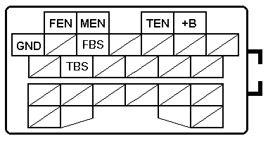

Jumper between ”TBS” and “GND” in the socket. Connect the positive end of the LED tester to “B+” and
The negative end to “FBS”. Switch on the ignition. The tester should light up a few seconds.
Memory cancel
1. Connect the "TBS" and "GND" terminals of the diagnosis connector.
2. Output all memorized codes.
3. After the first code is repeated, depress the brake pedal 10 times at intervals of less than 1 second.
Fault code list
11 Wheel speed sensor, sensor rotor ( right front ) Open or short circuit of sensor / harness, damaged rotor
12 Wheel speed sensor, sensor rotor ( left front ) Open or short circuit of sensor / harness, damaged rotor
13 Wheel speed sensor, sensor rotor ( right rear ) Open or short circuit of sensor / harness, damaged rotor
14 Wheel speed sensor, sensor rotor ( left rear ) Open or short circuit of sensor / harness, damaged rotor
15 Wheel speed sensor Open circuit of wheel speed sensor
22 Hydraulic unit Open or short circuit of solenoid coil / harness, malfunction of drive circuit, pressure reduction not made
51 Fail – safe relay Open or short circuit of relay
53 Motor relay, Motor Damaged relay, open or short circuit of relay, malfunction of motor
61 ABS control unit Malfunction of control unit